LauraStar Pulse
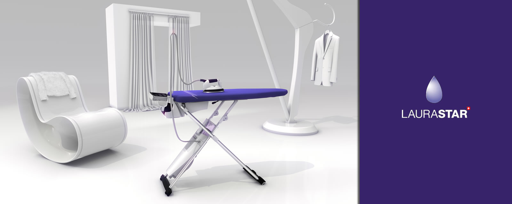Laurastar — мировой лидер в создании профессиональных гладильных систем для домашнего использования. Многофункциональный комплекс состоит из уникальной активной гладильной доски, оснащённой вентилятором и вакуумной системой для предотвращения нежелательных складок, встроенного парогенератора и профессионального утюга — ещё одного важного элемента от Laurastar. Теперь профессиональный уход за тканями и превосходный результат доступен всем, кто ценит красивую одежду и хочет сохранить ее безупречный вид.
Быстрое время нагревания и автоматическое отключение
LauraStar Pulse нагревается всего за 3 минуты. А если вы забыли выключить гладильную систему, то она выключится автоматически после 15 минут нахождения без действия, для вашей безопасности и экономии энергии.
Функция pulse
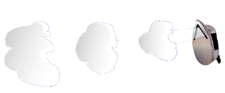Гладильная система LauraStar Pulse имеет функцию – Pulse, которая существенно облегчает процесс глажения. Благодаря импульсной подаче пара, увеличивается объём и скорость выхода пара из утюга, что положительно сказывается на проникающей эффективности пара. Поэтому режим – Pulse идеален для самых грубых видов ткани, пересушенного белья, сложенного в несколько слоёв белья, а так же подходит для дезинфекции подушек, матрацев. Для переключения между режимами «Pulse» и постоянной подачи пара, необходимо зажать и удерживать кнопку вентилятора на утюге и удерживать в течении 4-5 секунд.
Высокотемпературный мелкодисперсный пар


Клапан в бойлере открывается при нагреве пара до 150°C, далее двигаясь по трубке к утюгу, он остывает до 120°C. В подошве утюга LauraStar находится запатентованный паровой лабиринт длинной 1,5 метра, который подогревает пар до 150°C, параллельно увеличивая его в объёме на 170%. На выходе получается, рассеивающий, ультратонкий, но мощный пар, который адаптируется под все виды тканей и позволяет отпаривать вещи вертикально. Преимущество сухого пара заключается в том, что он способен проникать в глубь белья, эффективно разглаживая даже самые сильные замятия.
Постоянная подача пара
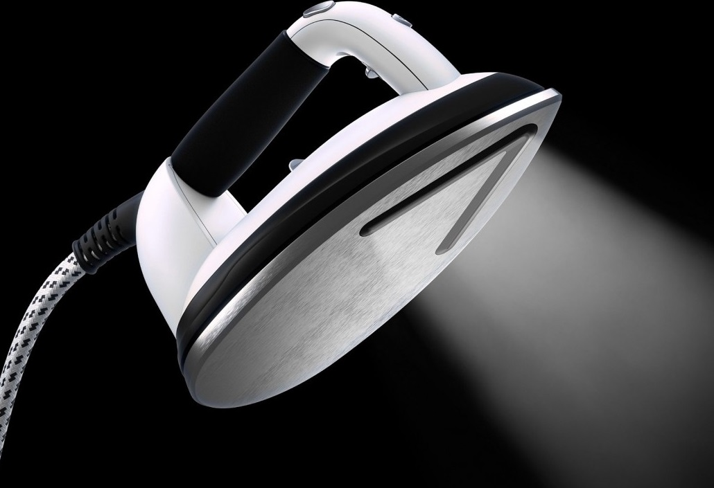Объём бойлера в гладильной системе LauraStar Pulse - 400 мл., специальный датчик контролирует уровень воды, при её снижении в бойлере до отметки 350 мл. включается автоматическая подкачка воды, это гарантирует постоянную подачу пара.
Автоматическое управление подачей пара и работы вентилятора
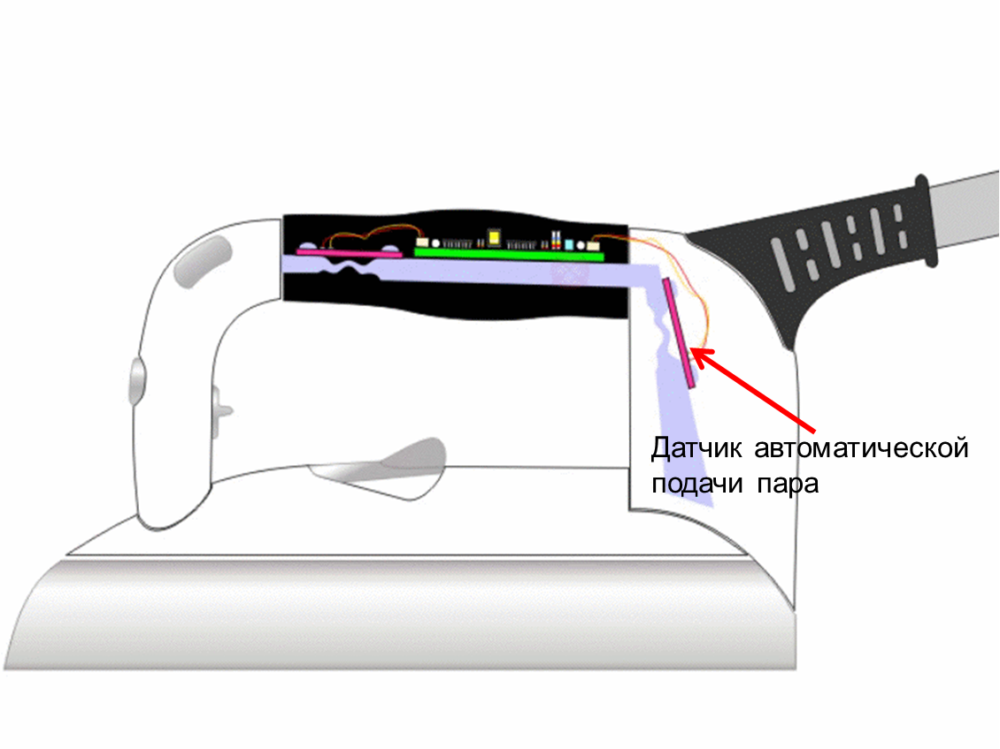 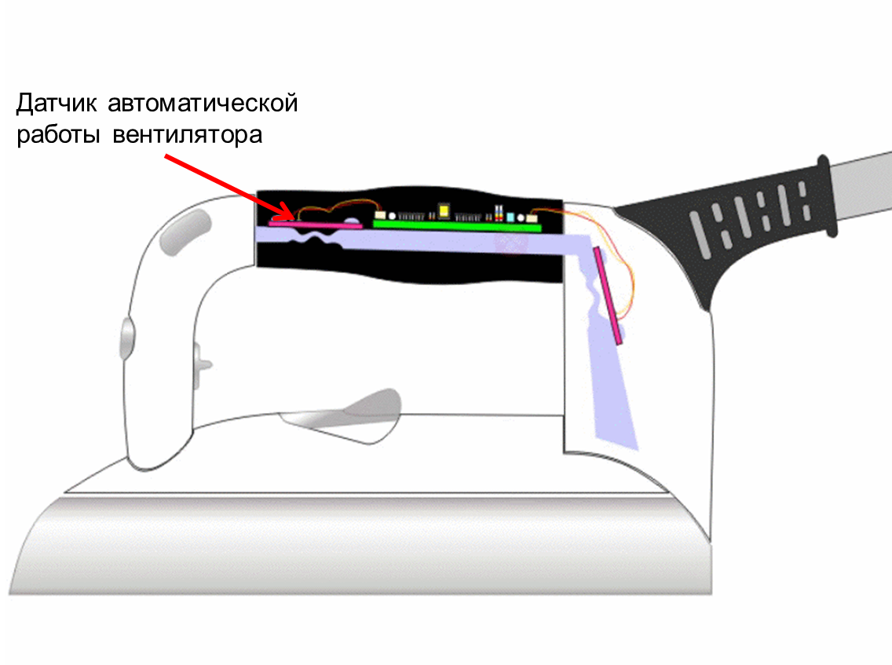Вы сможете гладить вещи в 2 раза быстрее и намного проще благодаря запатентованной ручке утюга. Она реагирует на ваши движения и автоматически включает гладильный стол и подачу пара. В АВТО режиме подачи пара, при движении вперёд будет подаваться пар, при движении назад подачи пара не будет. Вентилятор в гладильной доске начнёт работать, как только вы возьмёте утюг в руки и перестанет работать, когда вы положите утюг.
Постоянное давление пара 3.5 БАР
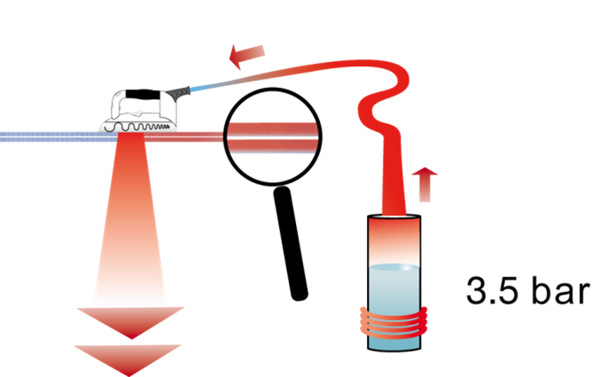LauraStar указывает профессиональную характеристику - постоянное давление пара на выходе из утюга - 3.5 бар. и производит 200 литров пара в минуту.
Активная 3D подошва
Уникальная запатентованная 3D подошва в гладильной системе LauraStar Pulse, существенно повышает эффективность и скорость глажения. Достичь столь высоких результатов, позволяет 2 основных решения:
1) ШИРОКИЕ СЛОТЫ ДЛЯ РАВНОМЕРНОГО РАСПРЕДЕЛЕНИЯ ПАРА.
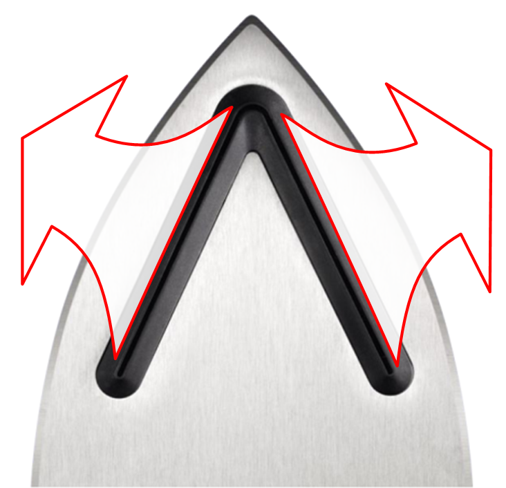 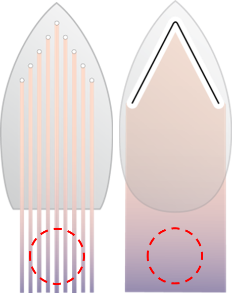Ʌ - образные слоты равномерного распределения пара в отличие от традиционных паровых отверстий, имеют более широкую область обработки паром. Благодаря этому нет необходимости проходить утюгом повторно по ткани.
2) Ʌ - ОБРАЗНЫЕ СЛОТЫ, ВЫСТУПАЮТ ПО ОТНОШЕНИЮ К АЛЮМИНИЕВОЙ ПОДОШВЕ.
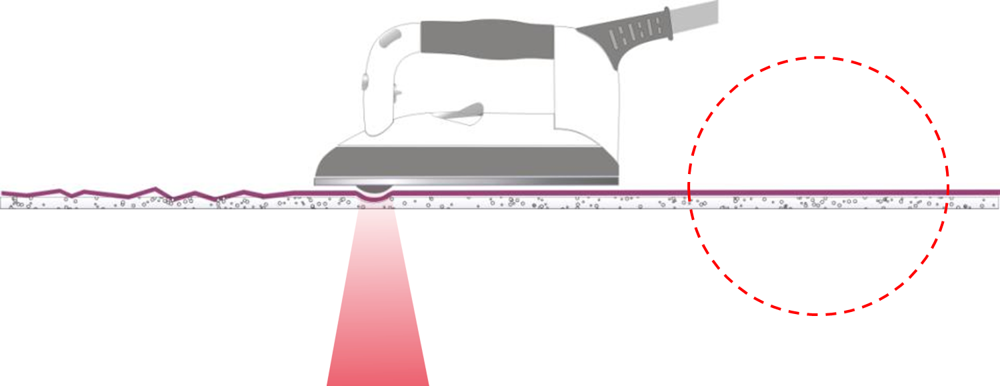Это решение позволяет эффективно отглаживать одновременно, как нижние, так и верхние замятия. Теперь нет необходимости без конца переворачивать бельё, чтобы его отутюжить. Этот эффект можно сравнить с асфальтоукладчиком, когда тот проходя оставляет за собой идеально ровную поверхность.
Облегченный профессиональный утюг
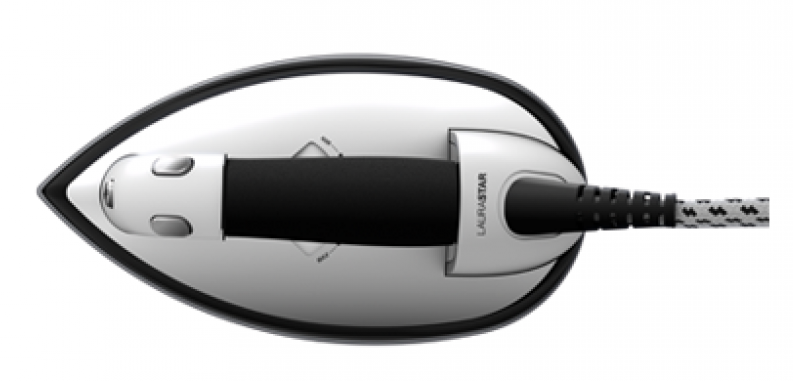Гладильная система комплектуется профессиональным облегченным утюгом, выполненным из композитных материалов, для более комфортного и менее затруднительного процесса глажения. Эргономичная пробковая ручка, с антибактериальным покрытием, позволяет удобно удерживать утюг и не вызывает затекания даже после долгого использования. Кнопки для подачи пара располагаются с двух сторон, чтобы глажение было комфортным для правшей и левшей. Вес утюга – 1 кг.
Профессиональная подошва форма материал
Подошва утюга сделана в форме капли, что повышает эффективность глажения исключая замятия ткани. Материал подошвы - алюминий, как во всех профессиональных станциях. Алюминий быстро набирает необходимую температуру и максимально равномерно поддерживает её по всей подошве. Стойкие пятна можно удалить с помощью абразивной губки для посуды или специального очистителя подошвы – POLYFER. После этого удалите оксид алюминия с подошвы при помощи влажной тряпки. Cлоты для подачи пара, находятся в верхней части подошвы, таким образом проводя утюгом вперёд, Вы изначально увлажняете ткань, делая её более податливой и задней частью подошвы тут же высушиваете, запечатывая идеальный результат глажения.
Насадка для деликатных тканей SOFTPRESSING-3D
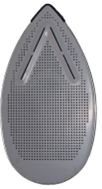Разработанная швейцарскими инженерами LauraStar, тефлоновая насадка защищает деликатные ткани и предотвращает появление блестящих следов на темных и костюмных тканях. Благодаря специальному покрытию, которое снижает температуру на поверхности подошвы утюга, насадка позволяет свободно гладить деликатные ткани, например, шелк, который чувствителен к нагреванию, пуговицы, бисер, прорезиненные наклейки. Тефлоновая насадка легко надевается на утюг. Вставьте переднюю часть утюга в носик насадки под проволочную перегородку, зафиксируйте утюг в насадке, слегка прижав. Подождите примерно 1 минуту, пока насадка не достигнет нужной температуры для деликатного глажения. Профессиональные системы, никогда не используют антипригарного напыления на подошве, так как оно достаточно быстро царапается, и приходит в негодность.
Профессиональная технология «ХОЛОДНОЕ ГЛАЖЕНИЕ»

Благодаря тому, что размер частиц пара в LauraStar очень мелкий, он практически не задерживается на гладильной доске, поэтому в отличие от «конкурентов» в активных досках LauraStar не используется нагревательный элемент для испарения конденсата. Это позволяет проглаженные вещи, продувать прохладным воздухом обеспечивая эффект «холодного глажения». Холодный поток воздуха запечатывает результат глажения. Теперь можно надевать только что проглаженные вещи.
Активный гладильный стол
Гладильная доска с запатентованной технологией MAGiiС™ позволяет работать в двух режимах (ПОДДУВ и ВАКУУМ) на двух скоростях. Режим ПОДДУВ расправляет вещи на гладильной доске, позволяя избежать отпечатывания швов. Режим ВАКУУМ фиксирует вещи на доске для разглаживания стрелок, плиссе, легких вещей из шелка без усилий.
Управление вентилятором
С помощью кнопки на ручке утюга можно управлять работой вентилятора, встроенного в гладильную систему, и легко переключать режимы одной рукой. Переключение между режимами «ПОДДУВ» и «ВАКУУМ», происходит коротким нажатием кнопки вентилятора на утюге.

Переключение скорости работы вентилятора осуществляется на панели парогенератора.

Регулирование высоты доски
Гладильная система LauraStar Pulse может быть установлена на одном из 6 уровней высоты, от 82 до 102 см.
Удобство использования и хранения

Гладильная система LauraStar Pulse легко перемещается благодаря двум парам колес и занимает небольшое пространство шириной 20 см в сложенном состоянии. При этом весь комплекс благодаря запатентованному механизму открывания и складывания может быть убран для хранения в одно мгновение. Отсек для хранения, встроенный в конструкцию гладильной доски, позволяет хранить даже горячий утюг
Автоматическое сматывание кабеля
Гладильная система LauraStar Pulse оборудована устройством автоматического сматывания кабеля питания. Чтобы убрать провод, вам необходимо слегка потянуть его на себя.
Неограниченное время глажения
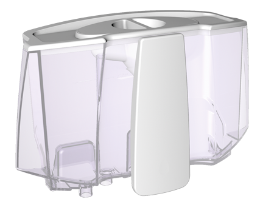Теперь можно доливать воду в систему непосредственно в процессе глажения, используя съемный резервуар для воды. Благодаря этому время глажения становится неограниченным. Звуковой сигнал и красная лампочка-индикатор предупреждают, что резервуар пуст. Объём резервуара для воды 1,2 л.
Силиконовый коврик
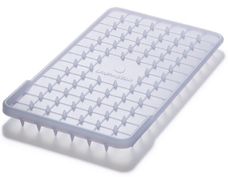Специальный изолирующий коврик позволяет безопасно ставить горячий утюг на термостойкую подставку, располагая её там, где Вам удобно. Горизонтальное хранение утюга является более устойчивым, а как следствие и более безопасным. Силиконовый коврик удобно хранится под утюгом в сложенном состоянии.
Держатель провода
Гладильная система LauraStar Pulse, комплектуется специальным держателем провода. Закрепив паропровод в держатель вы обеспечиваете свободное передвижение утюга по всей рабочей поверхности доски, при этом паропровод не будет касаться белья.
Защита от накипи
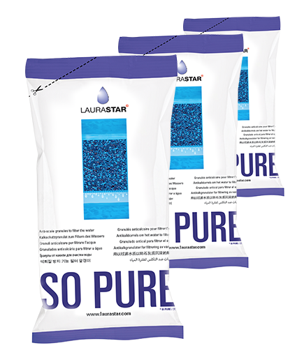Встроенный фильтр позволяет добавлять в систему обычную воду и защищает ее от преждевременного выхода из строя. Изначально цвет гранул будет чёрным, когда все гранулы станут тёмно-жёлтыми, необходимо произвести замену.
Поддон для слива воды

Удобный, комфортный и практичный поддон для слива воды. С его помощью можно быстро и легко освободить бойлер и промыть его. Ненужные примеси будут скапливаться в поддоне.
Технические характеристики
Мощность: 2200 Вт
Давление пара: 3.5 бар
Объем емкости для воды: 1.2 л
Мощность вентилятора: 16 Вт
Количество скоростей вентилятора: 2
Время нагрева: 3 минуты
Высота доски: 6 положений, 82-102 см
Длина шнура: 2.5 м
Цвет: фиолетовый
Размер в сложенном состоянии (ВхШхГ): 137х42х20 см
Вес гладильной системы: 19 кг
Страна изготовитель: Португалия